Synergy '26, IIIT Bangalore
Intelligent Tech Stack Recommendation Engine
Aman Tebriwal
M.S. Ramaiah University of Applied Sciences
Unstop registered email: [to be filled]
GitHub: https://github.com/amantebriwal4321/stacksense-engine
10 November 2026
StackSense turns a project brief into a frontend, backend, database, host, and the supporting services the brief actually needs. The choice is a filter plus a weighted score over a catalog I curated from vendor docs. Hard rules cover cloud, residency, deployment, and compliance. Budget, calendar, and priorities are traded off in the open, with a monthly USD band and field level warnings. The same input always returns the same JSON. Nothing in the running engine calls a model. A judge can run it with Python or Docker and import the public scenario files as they are.
The hard part is not listing popular tools. It is refusing the popular tool when the constraint says no. A zero dollar portfolio, an India marketplace under DPDP, a GDPR whiteboard at 5,000 concurrent sockets, an RBI lending app on AWS, an HR tool that already has Entra ID and SQL Server, and an offline Android app on 2 GB phones should not share a stack.
I treated residency, compliance, deployment model, and an explicit cloud as hard. A stack that breaks one of those is not returned, or the status is infeasible and the warning says which constraint was relaxed. Budget and timeline are soft. When the cheapest compliant footprint costs more than the budget, the status is infeasible and the number is on the page. I did not hard code the six public scenarios. The scorer never reads scenario_id except to copy it into the output. Hidden files in the same schema go through the same function.
Scope I left out on purpose: I do not price human time, taxes, or payment gateway take rate. The band is infra and the obvious usage lines (SMS, a model endpoint). I do not recommend a product I cannot point at a current doc for, and I keep a retired list so shut down services cannot win.
scenario JSON
| validate (types, enums, ranges, defaults)
v
hard constraints (cloud, residency, deployment, compliance, air gap)
|
v
score catalog -> frontend, backend, database, host, supporting
|
v
cost band + warnings + assumptions -> output JSON
The browser and the CLI both call recommend(). Validation failures return invalid_input and a null stack. They do not raise. The UI is static HTML served by the standard library. There is no build and no pip dependency. Docker is a thin wrapper around the same command.
Technology: Python 3.12 (3.11 or newer is enough), HTML/CSS/JS, unittest. Engine version 1.0.0.
The engine accepts the standard schema exactly: project type and platforms, scale, team, budget, timeline, infrastructure, requirements, compliance, priorities. Optional fields default, and every default is listed in assumptions. Unknown enums, wrong types, negatives, and priorities outside 1 to 5 are field errors. Unknown extra keys are ignored and named, so a judge file with an extra field still runs.
What each group changes:
api_only yields frontend None. SEO on a public site pulls a renderer that emits HTML (Astro, Next.js), not a blank SPA.has_devops are first class. A PHP team gets Laravel, not Spring. A team with no operator does not get EKS. Languages the team did not list produce SKILL_GAP when the chosen part needs them.infeasible with BUDGET_EXCEEDED.Extra fields, all optional, so a standard file still works:
| Field | Effect |
|---|---|
scale.geographic_spread | local, national, multi_region. Multi region plus RBI is a warning: the second region must stay in India. |
requirements.expected_rps_peak | Raises the cost band when the request rate is high even if the user count is small. |
team.vendor_lock_in_tolerance | low penalises DynamoDB and similar one cloud data models. |
operations.on_call | 99.95 or 99.99 with nobody on call is a warning. The computers do not page themselves. |
data.sensitivity | public through restricted. Derived from compliance when omitted. Drives private buckets, KMS, and whether a CDN may see the bytes. |
budget.existing_licences | Recorded so the engine does not assume a second directory or CI product. |
project.description is scanned with a fixed word list (Markdown, ledger, UPI, KYC, low RAM, 2G/3G, GPS, per seat). That is not a model. It only adds a warning or a small score nudge. Turning the LLM switch on or off does not change it.
Each catalog row has a name, languages, ops burden, complexity, cost tier, scale ceiling, lock in, whether it can be self hosted, which clouds and regions it fits, and a doc URL. There are 16 frontends, 11 backends, 11 databases, and 15 hosts, plus supporting choices picked by rule (auth, storage, payments, and so on). Retired products sit in a separate list and cannot win. The generated table is knowledge/CATALOG.md.
Hard filters run first. Examples: air gap keeps only Docker Compose, Keycloak or local accounts, MinIO, and drops social login, SMS OTP, and payments, with critical warnings. HIPAA drops DigitalOcean, Vercel, and Cloudflare. RBI forces an India pin even if residency was none, and conflicts with an explicit EU or US pin (status infeasible). cloud_preference: aws drops every other vendor. A static site does not get a container platform.
What remains is scored. Roughly, each factor is a 1 to 5 fit times the matching priority (skill uses time to market and maintainability, ops gets heavier when has_devops is false). Domain fit and a few affinities are fixed weights: C# pulls Razor and ASP.NET, PHP pulls Laravel and MySQL, Java or Kotlin on a fintech pulls Spring, Go on a large realtime peak pulls a Go server. A candidate whose language the team does not have loses a flat penalty, so it only wins when nothing they know can do the job. Ties break by stable id. No randomness, no clock in the output.
Architecture is capped. Microservices need a large senior team, devops, half a million users, and a long calendar. Kubernetes (EKS) needs still more. The public scenarios all land on static, monolith, modular monolith, or hybrid (Spring plus a SageMaker endpoint). The output says so, as OVERENGINEERING_AVOIDED, when a small team might have been tempted.
Cost is a sum of publishable bands (App Platform and managed Postgres from DigitalOcean's pages, Fargate and RDS order of magnitude, Spaces or S3 from the data volume, SMS from a fraction of users, a model endpoint when inference is on). High availability doubles the database line only at 99.95 and 99.99. If the minimum is over the budget, optional extras are dropped first (a CDN, a cache under 2,000 peak). If it is still over, the status is infeasible and the stack shown is the cheapest one that still respects the hard rules.
LLM declaration: selection does not use an LLM. This build contains no model client. STACKSENSE_LLM defaults to off. Setting it to on, or ticking the UI box, does not change the JSON. GET /api/health reports llm_called: false.
Outputs are outputs/P1_output.json to P6_output.json, produced by python -m stacksense recommend scenarios/public.json outputs. Screenshots are the running UI.
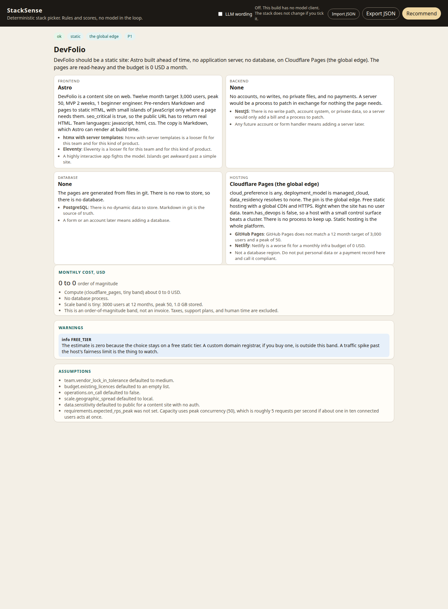
Figure 1. P1 in the running UI. Astro, no server, no database, Cloudflare Pages.
One beginner, two weeks, zero dollars, SEO on, Markdown in git, 3,000 users. A server would be a process to patch in exchange for nothing. Astro pre renders the pages. GitHub Pages is the runner up and loses on bandwidth headroom, not on price. Both are free.
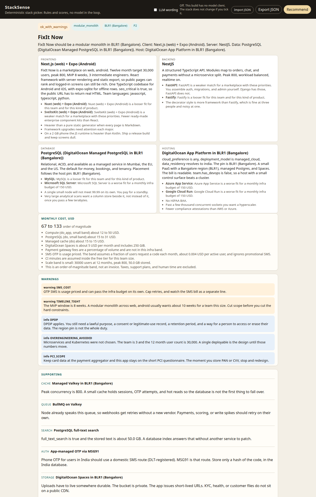
Figure 2. P2. Modular monolith in Bangalore, Next.js plus Expo, NestJS, Postgres.
Three intermediate engineers who write JavaScript, TypeScript, and Python. Eight weeks, 150 USD, India residency, DPDP, web plus Android, chat, search, files, phone OTP, payments, SEO. Microservices are the trap. The score stays on one NestJS deployable because there is no operator and the calendar is short. Next.js covers SEO on the web. Expo covers Android in the language they already ship. Kotlin lost because nobody listed it. FastAPI was close and lost because the web and the app are already TypeScript, so one more language on the server slows the MVP.
Data and files sit in Bangalore: DigitalOcean managed Postgres and Spaces. Postgres full text is enough for two cities of trades. Socket.IO stays on the API at a peak of 800. Razorpay takes the money so card data never lands in the app. OTP goes through MSG91, and SMS_COST is a warning because that line can pass 150 USD on its own even when the servers fit. The band is 67 to 133 USD, under the cap at the low end. DPDP is an info note: region is not the whole duty. Consent, retention, and erasure still belong to the product.
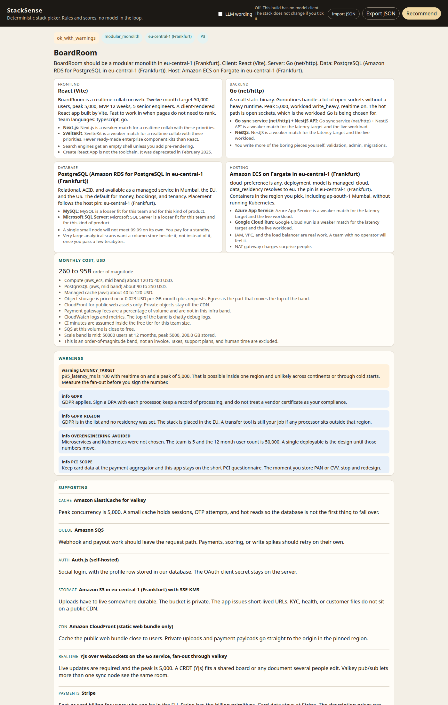
Figure 3. P3. Go on ECS in Frankfurt, React, Postgres, Yjs.
GDPR with residency left as none, so the pin moves to eu-central-1 and the assumption says so. Peak 5,000 and a 100 ms p95 are why the hot path is Go rather than Node, and why the host is ECS rather than a small PaaS. React (Vite) wins because the board does not need to rank. Stripe does per seat billing. Yjs is named, and Liveblocks is the alternative that loses because a SaaS realtime path fights the EU pin. LATENCY_TARGET warns that 100 ms is a measurement problem, not a slogan.
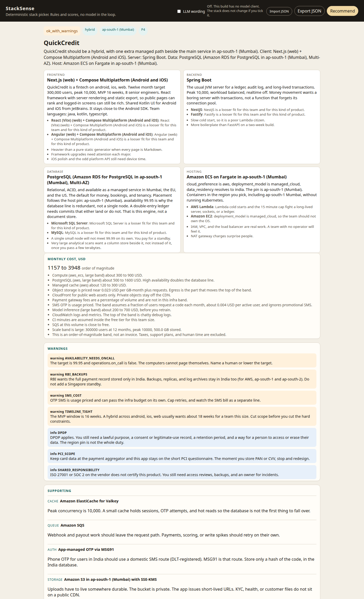
Figure 4. P4. Spring Boot on ECS in Mumbai, Postgres Multi-AZ, Razorpay, SageMaker.
Cloud is AWS, residency is India, and the list is RBI, PCI, DPDP, ISO 27001. The team is eight seniors in Java, Kotlin, and TypeScript, 16 weeks, 6,000 USD, 300,000 users, 99.95. The ledger signal in the description plus the fintech type keep the database on Postgres with Multi-AZ. MongoDB is filtered out. DynamoDB is an AWS option and loses on transactions and on lock in. Spring Boot is the server because this team already lives on the JVM and a ledger wants a long lived process. Lambda is the hosting alternative and loses on cold starts.
Clients: Compose Multiplatform for Android and iOS, because Kotlin is on the team, plus Next.js for the web, because TypeScript is too. Expo was the runner up and lost on that affinity, not because it is fake. Razorpay is the payment aggregator so PAN and UPI secrets stay off our disks. KYC files are S3 with SSE-KMS in ap-south-1, not a public CDN. Inference is a SageMaker endpoint in the same region, which is why the style is hybrid rather than one more module pretending to be a GPU. RBI_BACKUPS says replicas stay in India (ap-south-1 and ap-south-2 only). The band is about 1,157 to 3,948 USD, inside 6,000. 99.95 with on_call still false is a warning. ISO on AWS does not certify the app.
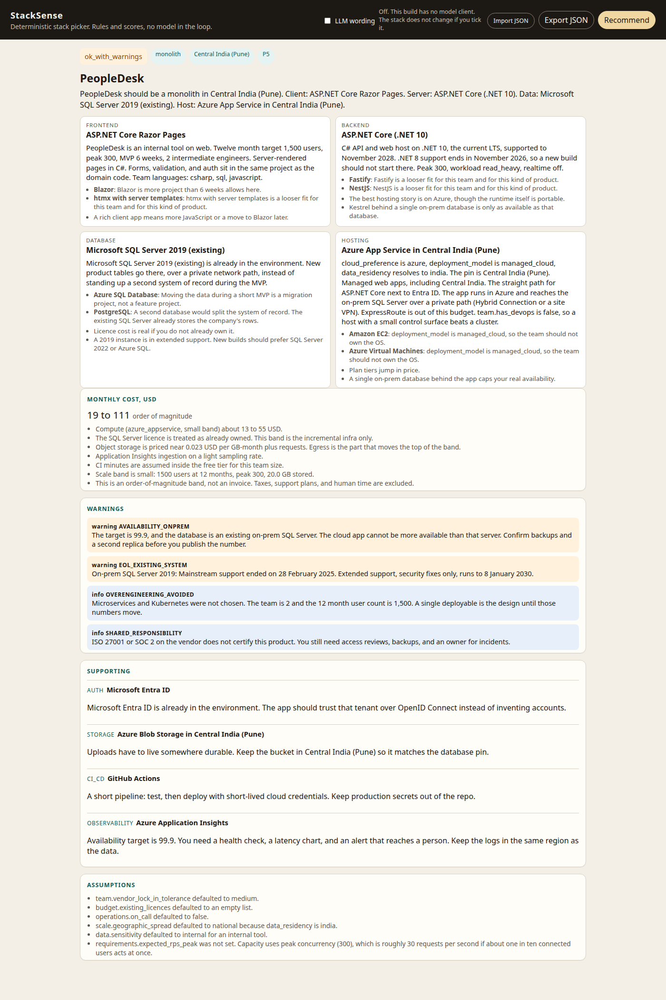
Figure 5. P5. Razor Pages and ASP.NET Core on .NET 10, existing SQL Server 2019, Entra ID, Azure Central India.
Two intermediate engineers, C# and SQL and some JavaScript, six weeks, Azure, India, and three systems already in the building. The engine reuses Entra ID and SQL Server instead of inventing a directory and a new database. .NET 10 is the current LTS. .NET 8 support ends in November 2026, so a new build should not start there. SQL Server 2019 is past mainstream support (28 February 2025) and in extended support until 8 January 2030, so the warning is on the page and the MVP still uses the server they have. 99.9 cannot be more real than that one on prem box. Blob storage is in Central India. Cost is about 19 to 111 USD against a 300 USD budget, because the database licence is treated as already owned.
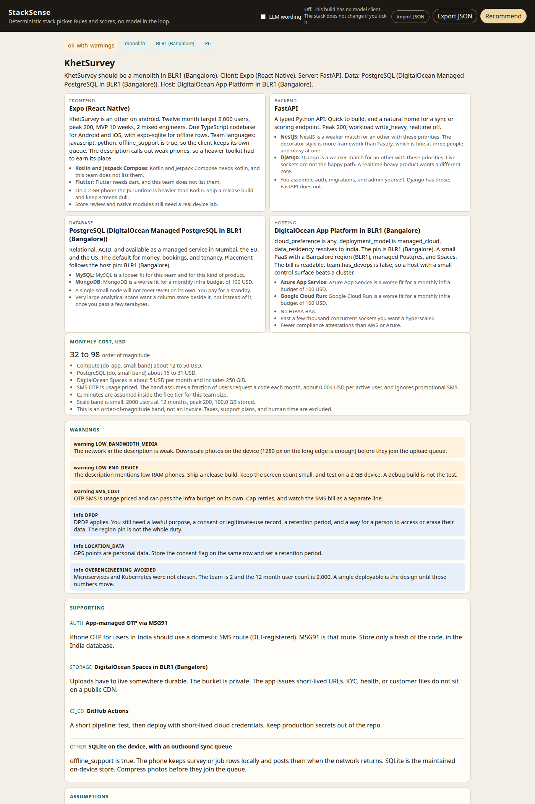
Figure 6. P6. Expo, FastAPI, Postgres and Spaces in Bangalore, SQLite on the phone.
Two mixed engineers, JavaScript and Python, 100 USD, India, DPDP, Android only, offline, photos, weak networks, 2 GB phones. Expo wins because they write JavaScript. Kotlin would be lighter and is the alternative, with an explicit skill gap the other way: they do not have it, and 10 weeks is not the moment to learn it. The warning still says to test a release build on a 2 GB device and to shrink photos before upload. Realm is named only as the thing not to use: Atlas Device Sync was removed on 30 September 2025. Sync is SQLite on the device and a FastAPI batch endpoint. Band about 32 to 98 USD.
| Category | How it is detected | What the engine does |
|---|---|---|
| Missing fields | Required keys absent, or a parent object missing. | invalid_input, one error per field, stack null. Optional fields default and show up in assumptions. Figure 7. |
| Invalid values | Wrong types, negatives, unknown enums, priorities outside 1 to 5. Enums are case sensitive. | Every problem listed. No stack. Figure 8. |
| Contradictions | Budget below the minimum compliant cost. 99.99 with no operator. Air gap plus payments or social login. Cloud none plus managed cloud. RBI plus a non India residency. | Critical warning. infeasible when a hard rule was relaxed or the budget cannot buy the footprint. The stack shown is the closest legal one. Figure 9. |
| Over engineering | Team under 8 and users under 100,000, or the Kubernetes gate (10 seniors, devops, 1M users, 99.95) fails. | Monolith or modular monolith. Info warning that microservices and Kubernetes were rejected. |
| Regulatory | Compliance list plus residency. | Region pin, BAA hosts only for HIPAA, India only for RBI including backups, PCI note, DPDP and GDPR notes. Figure 4 and Figure 9. |
| Existing systems | Keyword parse of the list, plus a version regex for SQL Server. | Reuse when the engine is still patchable (SQL Server 2019, Entra ID). Do not reuse a dead engine. Figure 5. |
| On prem or air gap | deployment_model. | Docker Compose, no public SaaS in the choice strings. Payments and phone OTP dropped with critical warnings. Figure 10. |
| Skill mismatch | Catalog languages versus team.languages. | Prefer the language they have (PHP to Laravel and htmx). If the winner still needs a language they lack, SKILL_GAP. Figure 11. |
| Deprecated tech | Pattern list on existing_systems and on the description. | Never selected. Critical when support is gone (SQL Server 2012, Fauna, Realm). Warning when extended support remains (SQL Server 2019). Figure 10. |
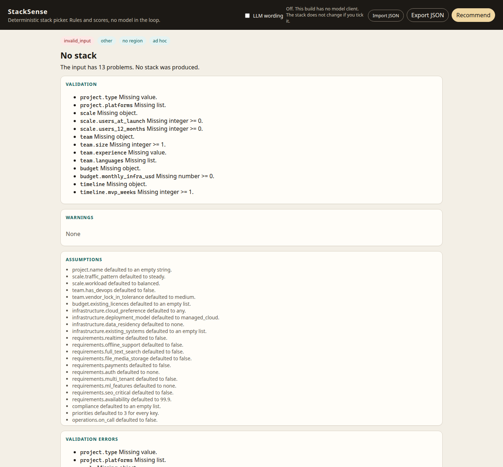
Figure 7. A file with almost no fields. Field errors, no stack.
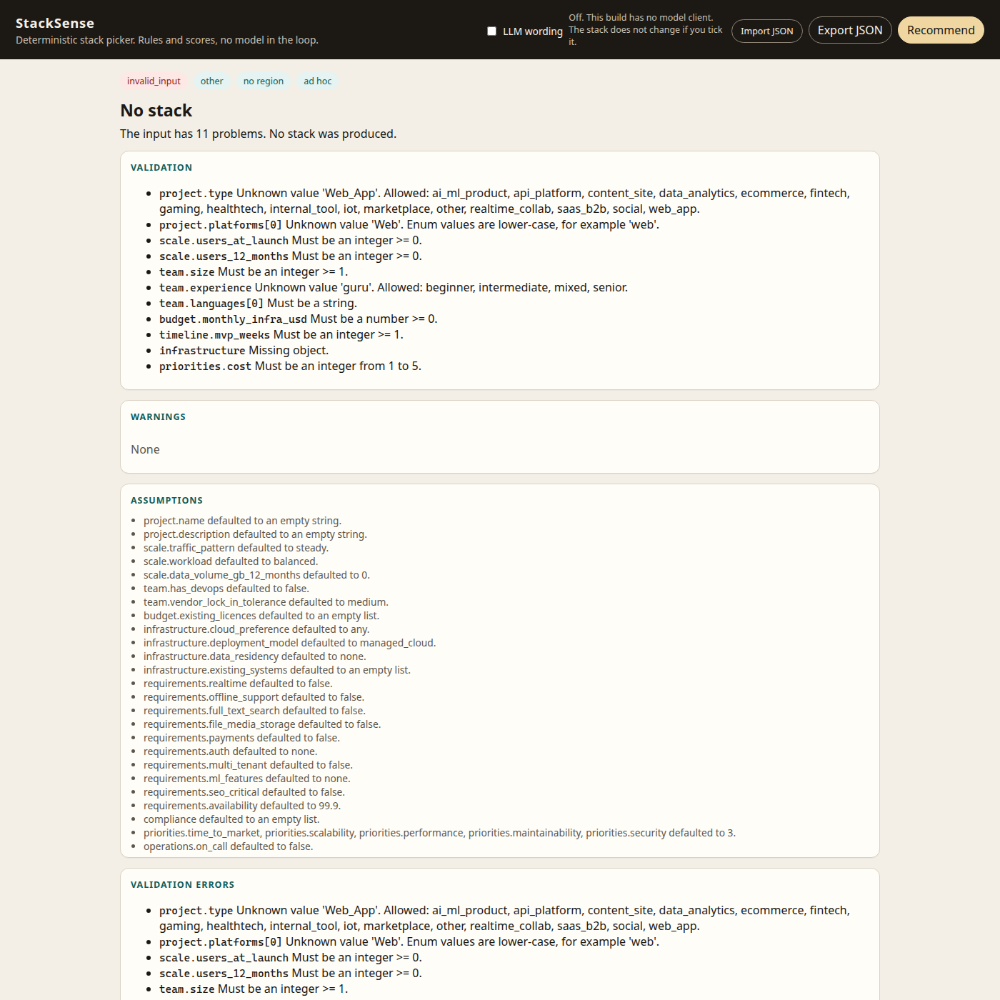
Figure 8. Bad types, a negative budget, an unknown enum, a priority of 9.
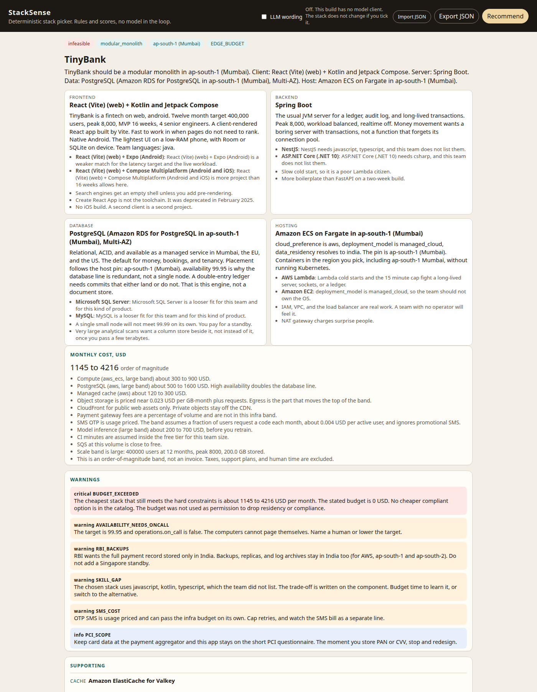
Figure 9. Zero budget against an RBI lending shape. Status infeasible, minimum about 1,145 USD, region still Mumbai.
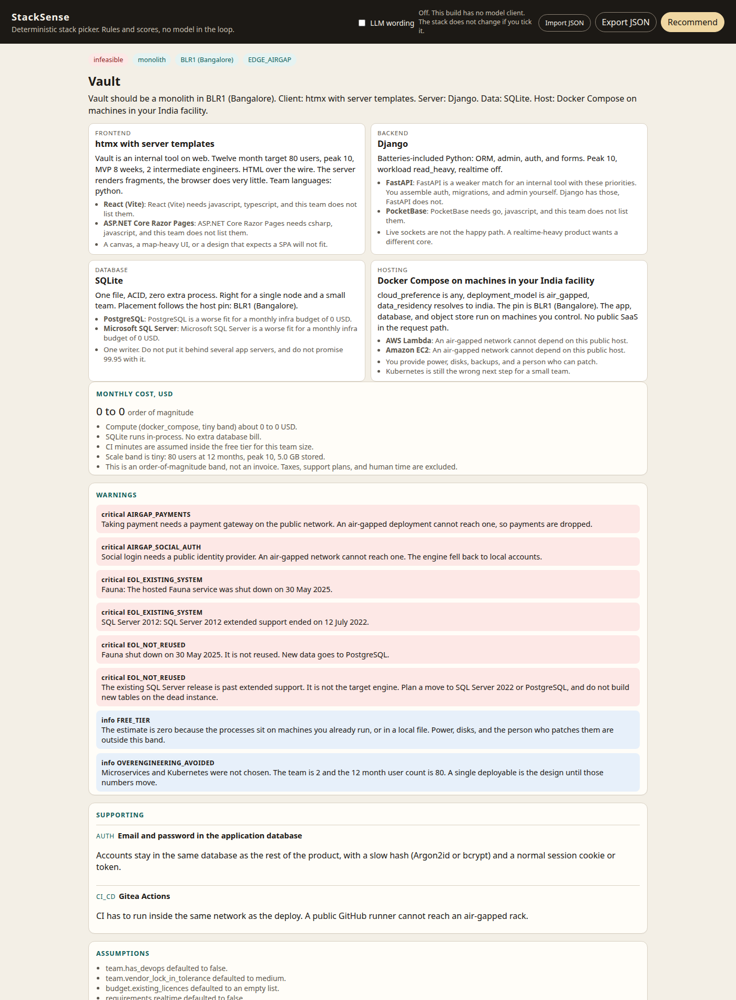
Figure 10. Air gap. Docker Compose, local accounts, payments dropped. Fauna and SQL Server 2012 are refused.
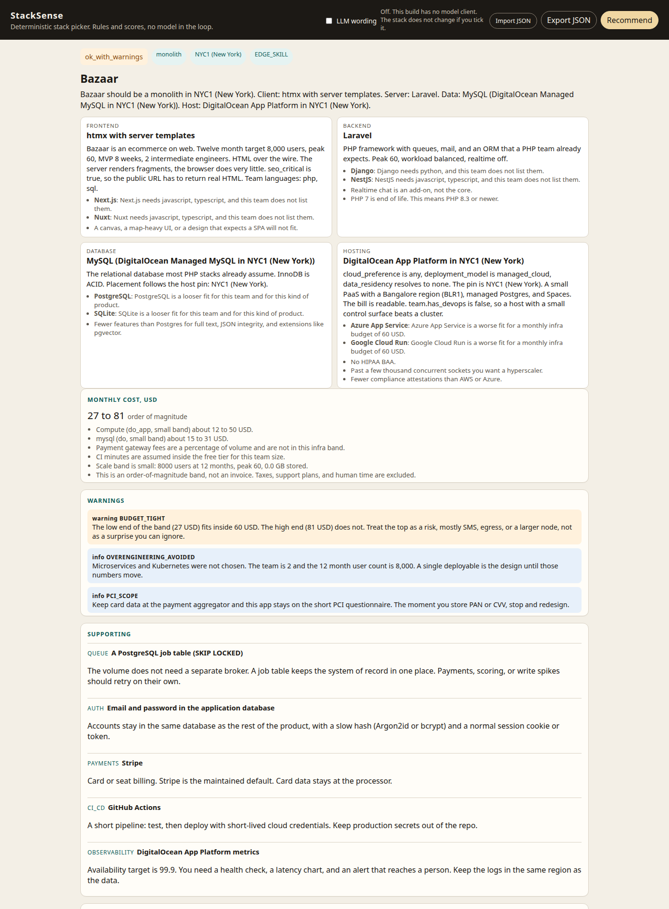
Figure 11. A PHP and SQL team. htmx, Laravel, MySQL. Next and Nest lose because the team did not list JavaScript.
The form itself, before a run, is in docs/screenshots/ui_form.png. A CLI run of P2 and of the invalid file is in docs/screenshots/cli_p2.png.
Twenty one unittest cases call recommend() directly. They check the six public scenarios for the properties above (region, reuse, free tier, no Kubernetes), determinism, a renamed scenario id that must not change the choices, invalid input, a zero budget fintech, air gap with no SaaS in the choice strings, a PHP team, HIPAA host filtering, and low lock in skipping DynamoDB. They do not store a canned answer. I also ran the six files through the CLI into outputs/ and loaded each result in the UI for the screenshots.
Sense check against public practice, not a private benchmark. Static Markdown sites on Cloudflare or GitHub Pages are the usual zero dollar answer. Indian UPI products integrate Razorpay or Cashfree rather than storing cards. RBI's 6 April 2018 direction is why backups stay in India. GDPR with no stated residency is handled by pinning to the EU and saying so. Entra ID plus an existing SQL Server is the boring and correct Azure internal tool. Offline mobile sync on Realm is no longer a living plan after 30 September 2025, which is why the device store is SQLite.
The cost band is an order of magnitude. NAT gateways, chatty logs, and a bad SMS retry loop can leave it. I do not model multi region active active except as a warning. Compose Multiplatform on iOS is a real product and still needs device time the score cannot see. A team that writes a language the catalog barely knows (Elixir, for example) gets a low skill match and a mainstream alternative, with the gap called out, rather than a framework I did not research. Description keywords are a short list, so a clever sentence will not silently rewrite the brief. I would add a fuller price table per region, and a way to mark an existing system as "must keep" versus "may replace" without guessing from the version string.
Runtime libraries: none beyond the Python standard library. No paid API. Docker image, optional: python:3.12-slim on Docker Hub. Tests: unittest. UI: hand written HTML, CSS, and JavaScript.
Catalog sources (titles and URLs also live in stacksense/kb.py and knowledge/CATALOG.md):
Cursor, with the Grok model, was used to write the engine, the tests, the UI, this report, and to drive the local browser for screenshots. Vendor facts (support dates, regions, shut downs) were checked against the public pages listed in section 10 during that work. The running engine does not call an AI service. Stack choices come from the filters and scores in stacksense/decide.py and the catalog in stacksense/kb.py. The LLM switch exists, defaults to off, and has nothing to call.